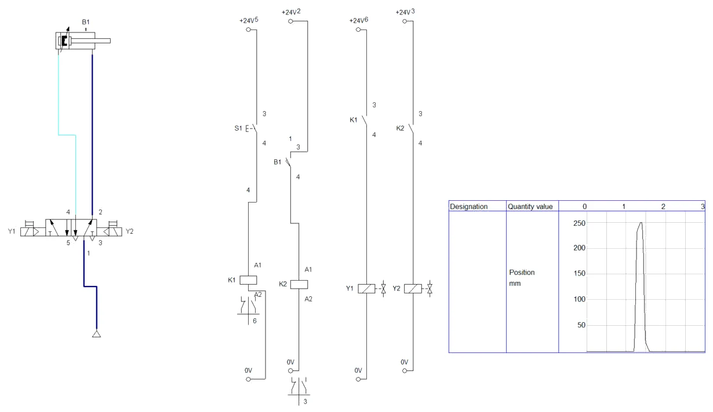
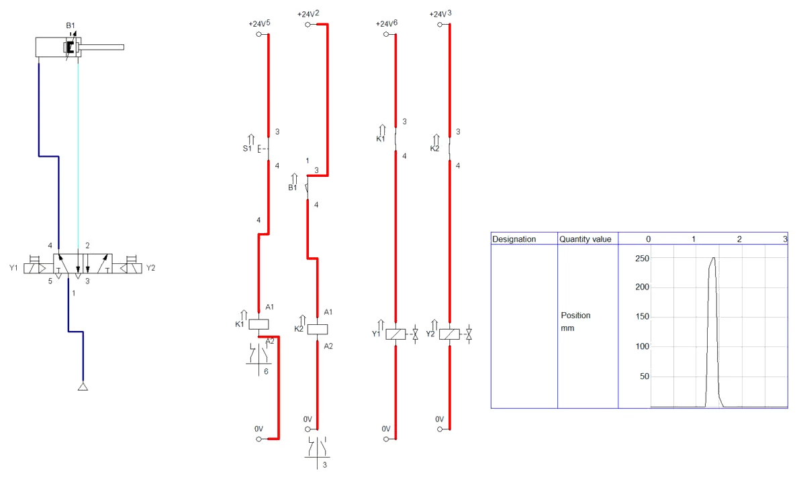
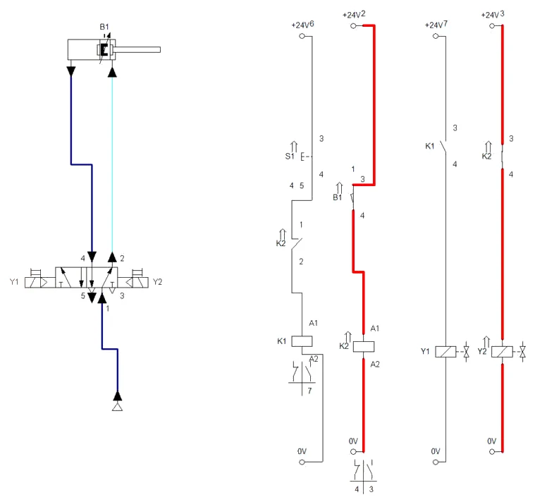
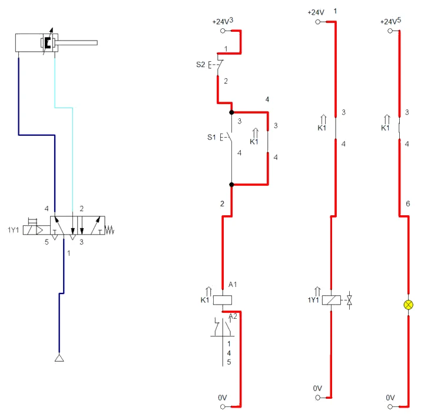
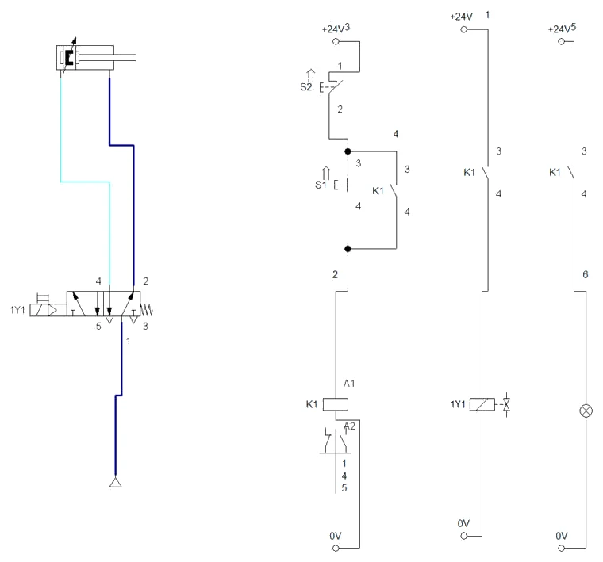
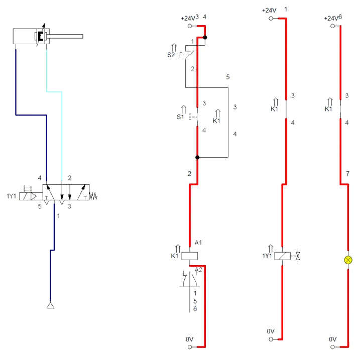
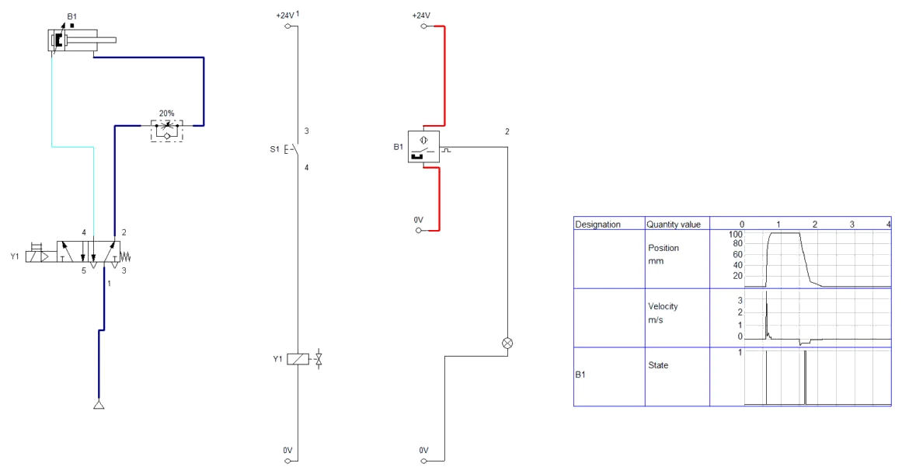

POSTUPAK · RADNI LIST V08 · FLUIDSIM
Postupak V08 · vježbe V18, V21 i V23 · 6 sati
Postupak V08 — granična sklopka, samodržanje i senzori u FluidSIM-u
Cijeli radni list V08 korak po korak: automatski povrat cilindra graničnom sklopkom i prednost povrata, krug samodržanja s dominantnim isključivanjem i uključivanjem, te trajanje signala magnetskog senzora. Uz svaki korak su snimke zaslona i potpuna rješenja.
- upravljati povratom cilindra graničnom sklopkom i pokazati blokirajući signal
- osigurati prednost povrata mirnim kontaktom releja
- spojiti krug samodržanja i razlikovati dominantno isključivanje i uključivanje
- nacrtati paralelnu granu s račvanjem u električnoj shemi
- pokazati kako brzina klipa određuje trajanje signala senzora
- spremiti sheme, popuniti zapis simulacije i predati rad
O postupku
Ova stranica je postupak za radni list V08: sve što se radi na računalu, od nove sheme do predaje, redom kojim je zadano. Tekst zadatka, sheme, pitanja i rješenja isti su kao na stranicama vježbi V18 Granična sklopka — automatski povrat i V21 Krug samodržanja i V23 Beskontaktni senzori; ovdje su dopunjeni koracima u FluidSIM-u i rezultatima simulacije.
Rješenja su skrivena ispod svakog pitanja. Najprije riješite sami, a onda otvorite Prikaži rješenje i usporedite.
Gotove sheme (rješenja) za FluidSIM
- PIH_V18_rjesenje_v01.ct — dio A: shema V18.1 (granična sklopka B1, automatski povrat), dijagram položaja
- PIH_V18_prednost_povrata_v01.ct — dio A: dopuna iz pitanja 6, mirni kontakt K2 u stazi 1
- PIH_V21_rjesenje_v01.ct — dio B: krug samodržanja s dominantnim isključivanjem (shema V21.1)
- PIH_V21_dominantno_ukljucivanje_v01.ct — dio B: inačica s dominantnim uključivanjem
- PIH_V23_magnetski_senzor_v01.ct — dio C: magnetski senzor B1 na 42–53,5 mm, prigušno uvlačenje, dijagram s brzinom i signalom
Datoteke se otvaraju u FluidSIM-P 4 (File → Open). Snimke zaslona napravljene su u FluidSIM-P 4.2 s engleskim sučeljem. Osnove rada u FluidSIM-u (nova shema, knjižnica, crtanje vodova, provjera, simulacija, dijagram put–korak) opisane su u Postupku V01, odjeljak 0.
0 · Prije početka
- File → New (Ctrl + N) otvara novu shemu; Window → Tile Vertically (Shift + F4) postavlja shemu i knjižnicu jednu uz drugu.
- Elemente povucite iz knjižnice na shemu i dvoklikom otvorite njihove dijaloge. Vod crtajte povlačenjem od priključka do priključka; povlačenjem na postojeći vod nastaje račvanje.
- Oznake (1A1, 1V1, 1S1, 0Z1 …) upisuju se elementom Text iz skupine Miscellaneous (uključite Frame Text).
- Execute → Check Superficially (F6) provjerava crtež; Start (F9), Pause (F8), Stop (F5).
- Ručno tipkalo aktivirate klikom mišem (dok držite tipku miša); Shift + klik zadrži ga pritisnutim. Ručica sa zasunom prebacuje se jednim klikom i ostaje u položaju.
- Granični ventil veže se uz cilindar oznakom: dvoklik na cilindar → kartica Actuating Labels → oznaka (npr. 1S2) i položaj na hodu (od–do u mm); ista oznaka upiše se dvoklikom na valjak graničnog ventila (Mechanical connection → Label).
- Dijagram put–korak: iz Miscellaneous povucite State Diagram i na njega povucite cilindre i ventile čije stanje želite pratiti.
Električni dio u FluidSIM-u
Električni dio crta se u istoj shemi kao pneumatski. Elementi su u knjižnici u skupini Electrical controls: Power Supply (+24V i 0V), Relays (relej, svitak ventila Valve solenoid), Switches → Manually Operated (tipkala), General Switches (radni Make switch i mirni Break switch kontakt), Proximity Switches (senzori) i Measuring instruments (signalna svjetiljka Indicator light). Svaka staza u našim shemama ima svoj simbol +24V i 0V — FluidSIM ih smatra istom sabirnicom, a vodovi se ne križaju.
Veza električnog i pneumatskog dijela ostvaruje se oznakom: dvoklik na svitak u stazi → Label Y1, i dvoklik na lijevi kraj razvodnika (elektromagnetski aktuator) → Label Y1. Isto vrijedi za relej i njegove kontakte (K1) te za senzor i oznaku na cilindru (B1). Brojeve uz staze i vodove (1, 2, … kraj +24V i na vodovima) FluidSIM dodjeljuje sam, redom kojim su elementi stavljani u shemu; oni nisu nužno jednaki brojevima staza iz zadatka.
Shift + klik zadrži tipkalo pritisnutim (ponovni Shift + klik ga otpušta) — tako se u simulaciji mogu istodobno „držati” dva tipkala.
Dio A · V18 Granična sklopka — automatski povrat
Zadatak
Na valjkastoj stazi skladišta paketi putuju prema otpremi. Pakete za drugu rampu rukovatelj skreće na bočnu stazu: kad paket stigne pred skretnicu, kratko pritisne S1. Dvoradni cilindar 1A1 (Ø32/12 mm, hod 250 mm) gurne paket na bočnu stazu i sam se vrati, bez drugog tipkala. Povratni signal daje mehanička granična sklopka B1 s valjkom, koju na kraju hoda pritisne kvačica na klipnjači.
Razvodnik 1V1 je bistabilni elektromagnetski 5/2 (Y1 izvlačenje, Y2 uvlačenje). S1 uključuje relej K1 (Y1), a B1 relej K2 (Y2). Oznaka B1 slijedi uobičajeno označavanje, u kojem su granične sklopke i senzori u skupini B; u starijim shemama granična sklopka često nosi oznaku S.
Podaci: paket do 8 kg; faktor trenja paketa po bočnoj vodilici i graničniku procjenjuje se na 0,4; klipnjača treba postići brzinu 0,5 m/s na prvih 20 mm hoda. Relej privuče za oko 10 ms, ventil prebaci za oko 20 ms. Mreža ima 6 bar, a na ovom cilindru može se ugraditi i zaseban regulator tlaka.
Sigurnost pri radu
Pažnja
Klipnjača s hodom od 250 mm i brzinom 0,5 m/s udara snažno. Nosač granične sklopke pomičite i namještajte samo bez tlaka, jer ručni pritisak na valjak B1 pokreće povrat, a pritisak na S1 izvlačenje. Granična sklopka ne smije služiti kao mehanički graničnik: kvačica je smije pritisnuti samo do propisanog nadhoda, inače se sklopka lomi. Vodiče spajajte bez napona.
Shema
Simbol granične sklopke u električnoj shemi razlikuje se od tipkala samo aktuatorom: umjesto tipke nacrtan je valjak. Kontakt se crta u neaktiviranom stanju; ako je sklopka u osnovnom položaju stroja pritisnuta, to se na shemi posebno označava.
Vježba se radi u FluidSIM-u
Koraci postupka vježbe koji se odnose na spajanje na didaktičkoj ploči i mjerenje štopericom ili manometrom izvode se u simulaciji. Gdje simulacija ne može pokazati pojavu iz pokusa, to je napisano uz korak.
A1 · Shema V18.1 u FluidSIM-u
- Za polazište uzmite shemu V17 (bistabilni razvodnik, releji K1 i K2) i kopirajte je u novu shemu. Tipkalo S2 obrišite i umjesto njega u stazu 2 stavite radni kontakt iz General Switches → Make switch; dvoklikom mu upišite oznaku B1 (Triggered by: Limit Switch) — to je granična sklopka s valjkom.
- Cilindar: najprije Parameters (hod 250 mm, klip 32 mm, klipnjača 12 mm) i U redu, pa ponovno dvoklik i tek onda Actuating Labels: B1 na 248–250 mm. Kad se hod povećava, oznaka na 248 mm ne prolazi dok je stari hod 100 mm — zato se ovdje hod mijenja prvi.
- Staze: 1 S1 → K1; 2 B1 → K2; 3 radni kontakt K1 → Y1; 4 radni kontakt K2 → Y2. F6 → No superficial errors detected.
- Iz Miscellaneous povucite State Diagram, na njega povucite cilindar (Position) i u svojstvima dijagrama postavite Fixed interval 0–3 s.
Pazi: redoslijed hod / oznaka
Pravilo glasi: oznake se mijenjaju tako da su uvijek unutar hoda. Kad se hod smanjuje, najprije se oznake spuste ili obrišu; kad se povećava, najprije se poveća hod. U suprotnom FluidSIM vrti poruku „Position End… minimal / maximal” i prozor se ne može zatvoriti (vidi Postupak V07, odjeljak B1).
A2 · Simulacija: automatski povrat i držanje S1
- Start (F9) i kratko pritisnite S1: K1 i Y1 izvuku klipnjaču, kvačica na kraju hoda pritisne B1, K2 i Y2 je vrate (Slika A2.1). Bez opterećenja i prigušenja ciklus traje oko 0,4 s.
- Pokus iz koraka 5: Shift + klik na S1 (tipkalo ostaje pritisnuto). Klipnjača ostaje izvučena iako je B1 pritisnut — pod naponom su i Y1 i Y2 (Slika A2.2). Shift + klikom otpustite S1: klipnjača se vraća.


A3 · Dopuna: prednost povrata
- Shemu spremite kao zasebnu datoteku. U stazu 1, između S1 i svitka K1, umetnite mirni kontakt K2 (Break switch, oznaka K2) — rješenje 1 iz pitanja 6.
- Start, Shift + klik na S1: klipnjača se vraća čim dođe do B1, iako se S1 drži (Slika A3.1). Dok se S1 drži, klip „treperi” uz kraj hoda: B1 se pri povratu otpusti na 248 mm, mirni kontakt K2 se zatvori i K1 ponovno privuče — upravo kako je opisano u rješenju pitanja 6.

A4 · Pitanja i zadaci
1. Opišite redom signale i gibanja od kratkog pritiska na S1 do povratka klipnjače u osnovni položaj.
Prikaži rješenje
S1 → K1 privuče → kontakt K1 u stazi 3 uključi Y1 → razvodnik 1→4 → klipnjača se izvlači (S1 je već otpušten, razvodnik pamti položaj) → kvačica pritisne B1 → K2 privuče → kontakt K2 u stazi 4 uključi Y2 → razvodnik 1→2 → klipnjača se vraća → B1 se otpusti → K2 otpusti, razvodnik pamti položaj uvlačenja. Sklop čeka novi pritisak na S1.
U FluidSIM-u
U simulaciji se cijeli slijed vidi u dijagramu položaja (Slika A2.1): izvlačenje do 250 mm i povrat odmah nakon dodira B1.
2. Opišite rezultat pokusa iz koraka 5 (S1 držan dulje od hoda) i objasnite ga.
Prikaži rješenje
Klipnjača se izvuče i ostane izvučena dok se drži S1, iako je B1 pritisnut. Pod naponom su i Y1 i Y2, a bistabilni razvodnik tada ostaje u zatečenom položaju (izvlačenje). Tek kad se S1 otpusti, djeluje samo Y2 i klipnjača se vraća. To je isti problem kao blokirajući signal u pneumatici: dva suprotna signala na istom razvodniku. Na skretnici bi to značilo da cilindar zaprečuje stazu i sljedeći paket udari u klipnjaču.
U FluidSIM-u
U simulaciji (Slika A2.2, S1 zadržan Shift + klikom) pod naponom su i Y1 i Y2, a klipnjača ostaje izvučena dok se S1 ne otpusti.
3. Izračunajte silu potrebnu za guranje paketa (trenje i ubrzanje) i usporedite je sa silom cilindra Ø32 mm pri 6 bar i pri 2 bar (η = 0,9).
Prikaži rješenje
Trenje: Ftr = μ · m · g = 0,4 · 8 · 9,81 ≈ 31,4 N.
Ubrzanje na 0,5 m/s na putu 20 mm: a = v² / (2s) = 0,25 / 0,04 = 6,25 m/s² → Fa = 8 · 6,25 = 50 N.
Potrebno ukupno ≈ 81 N. Cilindar daje pri 6 bar 0,9 · 0,6 · 804,2 ≈ 434 N, a pri 2 bar 0,9 · 0,2 · 804,2 ≈ 145 N. I pri 2 bar sila je dovoljna s rezervom od oko 1,8. Cilindar je pri punom tlaku predimenzioniran.
4. Od trenutka kad kvačica pritisne B1 do početka povratnog gibanja prođe vrijeme privlačenja releja K2 i prebacivanja ventila. Koliki put klipnjača pritom prijeđe pri 0,5 m/s? Gdje zato treba postaviti B1 i što se događa ako je postavljena točno na kraju hoda?
Prikaži rješenje
t = 10 ms + 20 ms = 30 ms; s = v · t = 500 mm/s · 0,03 s = 15 mm
Ako je B1 postavljena točno na kraju hoda, klip udari u poklopac cilindra punom brzinom, a povrat počinje s kašnjenjem nakon udara. Ako se B1 postavi oko 15 mm prije kraja hoda, razvodnik prebaci približno u trenutku kad klip stigne na kraj, pa je udar manji, a ciklus kraći. Točan položaj namješta se pokusom, jer vremena ovise o tlaku, duljini vodova i prigušenju. Za mehanički zahtjevnije primjene koristi se cilindar s namjestivim prigušenjem krajnjeg položaja.
5. Izračunajte potrošnju zraka po ciklusu pri 6 bar i pri 2 bar. Koliko se posto zraka uštedi smanjenjem tlaka?
Prikaži rješenje
Volumen: (804,2 + 691,2) mm² · 250 mm ≈ 373 850 mm³ = 373,8 cm³.
6 bar: 373,8 · (6 + 1,013) / 1,013 ≈ 2,59 Nl. 2 bar: 373,8 · (2 + 1,013) / 1,013 ≈ 1,11 Nl.
Ušteda: (2,59 − 1,11) / 2,59 ≈ 0,57, tj. oko 57 %. Namještanje tlaka prema stvarno potrebnoj sili jedan je od najjednostavnijih načina štednje stlačenog zraka. Pri nižem tlaku treba provjeriti i brzinu, jer se smanjuje i sila ubrzanja.
6. Dopuna sheme: povrat mora imati prednost — klipnjača se mora vratiti čim dođe do B1, bez obzira na to drži li se S1. Nacrtajte izmjenu u električnoj shemi i navedite dva moguća rješenja.
Prikaži rješenje
Rješenje 1: u stazu 1, u niz sa S1 ispred svitka K1, ugradi se mirni kontakt K2. Kad B1 uključi K2, mirni kontakt otvori stazu 1, K1 otpusti, Y1 ostaje bez napona i Y2 prebaci razvodnik. Kontaktna tablica K2: radni u stazi 4, mirni u stazi 1.
Rješenje 2: u stazu 1 ugradi se mirni kontakt granične sklopke B1 (sklopka s radnim i mirnim kontaktom). Djeluje jednako, ali bez dodatnog kontakta releja.
U oba slučaja klipnjača se vraća čim dođe do B1, i kad se S1 drži. Ako se S1 drži i dalje, pri povratu se B1 otpusti, mirni kontakt se ponovno zatvori i K1 opet privuče — cilindar se giba naprijed-natrag dok se S1 ne otpusti. Zato se u pogonu start ograničava na kratak impuls ili se dodaje uvjet da jedan ciklus smije krenuti samo jednom po pritisku.
U FluidSIM-u
Rješenje 1 je u datoteci PIH_V18_prednost_povrata_v01.ct (Slika A3.1); u simulaciji se vidi i „treperenje” klipa uz kraj hoda dok se S1 drži.
7. Skretnicu treba moći prebaciti na trajni rad (klipnjača stalno gura naprijed-natrag dok je uključen prekidač S2 s zadržavanjem). Koji dodatni element treba i kako se spaja?
Prikaži rješenje
Potrebna je druga granična sklopka ili senzor B0 u položaju uvučene klipnjače. U stazu 1 dodaje se paralelno sa S1 grana: prekidač S2 u nizu s radnim kontaktom B0. Kad je S2 uključen i klipnjača stigne u osnovni položaj, B0 uključi K1 i ciklus se ponavlja. Isključenjem S2 cilindar završi započeti ciklus i stane u osnovnom položaju. Uvjet s B0 osigurava da trajni rad uvijek počinje iz osnovnog položaja.
8. Klipnjača se izvuče i ostane izvučena i kad se S1 otpusti. Navedite mogući uzrok u svakom od dijelova: mehanika, granična sklopka, relej, ventil.
Prikaži rješenje
- mehanika: kvačica ne dohvaća valjak B1 (nosač pomaknut, paket zaustavio klipnjaču prije kraja);
- granična sklopka: spojen mirni kontakt umjesto radnog ili je kontakt istrošen;
- relej: K2 ne privlači (prekid u stazi 2, zamijenjene stezaljke svitka i kontakta) ili kontakt u stazi 4 ne zatvara;
- ventil: prekinut svitak Y2, loš utikač ili zakočena ručna pomoćna tipka.
Brza provjera: ručno pritisnuti valjak B1 i promatrati diodu na releju K2 i na utikaču Y2 — tako se kvar odmah smješta u električni ili pneumatski dio.
Dio B · V21 Krug samodržanja
Zadatak
Na liniji za doziranje plastičnog granulata ispod malog silosa nalazi se kosa zaklopka. Otvara je dvoradni cilindar 1A promjera Ø40/16 mm i hoda 160 mm, a upravlja njime monostabilni elektromagnetski razvodnik 5/2 s oprugom (1Y1). Operater kratko pritisne zeleno tipkalo S1 (START) i zaklopka se otvori te ostane otvorena, iako je prst već maknut s tipkala. Kad se u posudi skupi dovoljno granulata, operater pritisne crveno tipkalo S2 (STOP) i zaklopka se zatvori. Signalna žaruljica H1 svijetli dok je zaklopka otvorena.
Tipkalo daje signal samo dok je pritisnuto, a monostabilni razvodnik drži položaj samo dok je svitak pod naponom. Između njih zato mora postojati element koji pamti kratki signal. Tu zadaću ima relej K1 čiji radni kontakt premošćuje tipkalo START — to je krug samodržanja. Mreža stlačenog zraka je na 6 bar pretlaka, upravljački napon je 24 V DC. Svitak releja troši 1,2 W, elektromagnet razvodnika 2,5 W, a žaruljica 0,5 W.
U vježbi se spajaju dvije inačice kruga: dominantno isključivanje (kad su oba tipkala pritisnuta, prevladava STOP) i dominantno uključivanje (prevladava START). Za obje se popunjava tablica stanja, a na kraju se odabire inačica prikladna za zaklopku i to se obrazlaže.
Sigurnost pri radu
Pažnja
Električni i pneumatski dio spajajte samo kad je napajanje isključeno, a ventil na pripremnoj grupi zatvoren. Tlak uključujte tek kad su sve cijevi utaknute do kraja i kad je klipnjača slobodna — u njezinom se hodu ne smiju nalaziti ruke, alat ni vodiči. Cijev koja iskoči pod tlakom udara poput biča: prije uključivanja povucite svaku cijev da provjerite drži li. Ne spajajte vodiče dok je sklop pod naponom, čak ni pri 24 V, jer kratki spoj oštećuje izvor i kontakte releja.
STOP tipkalo u ovoj vježbi nije zamjena za sklopku za isključivanje u nuždi. Uređaj za isključivanje u nuždi na modulu napajanja mora biti dostupan cijelo vrijeme i prije početka rada provjerite da stvarno prekida napajanje.
Shema
U stazi 1 nalazi se mirni kontakt tipkala S2 u seriji s paralelnim spojem radnog kontakta tipkala S1 i radnog kontakta releja K1. Pritisak na S1 uključuje svitak K1; njegov kontakt u paraleli odmah zatvara drugi put struji pa relej ostaje uključen i nakon otpuštanja S1. Staza 2 preko drugog kontakta K1 uključuje elektromagnet 1Y1, a staza 3 preko trećeg kontakta žaruljicu H1. Budući da S2 prekida cijelu stazu prije točke grananja, pritisak na STOP uvijek isključuje relej — i onda kad je START istodobno pritisnut.
Kod dominantnog uključivanja mijenja se samo staza 1: S2 se stavlja u seriju s kontaktom samodržanja K1, a tipkalo S1 spaja se paralelno toj seriji, izravno od +24 V do svitka. Kad su oba tipkala pritisnuta, struja prolazi kroz S1 mimo tipkala S2 i relej ostaje uključen.
| S1 (START) | S2 (STOP) | K1 prije | K1 poslije — dominantno isključivanje | K1 poslije — dominantno uključivanje |
|---|---|---|---|---|
| 0 | 0 | 0 | 0 | 0 |
| 0 | 0 | 1 | 1 (pamti) | 1 (pamti) |
| 1 | 0 | 0 ili 1 | 1 | 1 |
| 0 | 1 | 0 ili 1 | 0 | 0 |
| 1 | 1 | 0 ili 1 | 0 | 1 |
Vježba se radi u FluidSIM-u
Koraci postupka vježbe koji se odnose na spajanje na didaktičkoj ploči i mjerenje štopericom ili manometrom izvode se u simulaciji. Gdje simulacija ne može pokazati pojavu iz pokusa, to je napisano uz korak.
B1 · Shema V21.1 (dominantno isključivanje)
- Za polazište uzmite shemu V16 (monostabilni razvodnik, relej K1, svjetiljka H1) i kopirajte je u novu shemu; stazu sa svjetiljkom H2 obrišite. Svitak i razvodnik označite s 1Y1. Cilindar: hod 160 mm, klip 40 mm, klipnjača 16 mm (hod se povećava, pa najprije Parameters).
- Staza 1: obrišite vod +24V → S1 i iznad S1 stavite Pushbutton (break) — mirni kontakt tipkala S2 (STOP). Spojite +24V → S2 → S1.
- Paralelno sa S1 stavite radni kontakt K1 (kopija kontakta iz staze 2). Njegov gornji priključak povucite na vod S2 → S1, a donji na vod S1 → A1: kad se vod ispusti na drugi vod, nastane račvanje (crna točka).
- Staza 2: K1 → 1Y1; staza 3: K1 → H1. F6 → No superficial errors detected.
Račvanje u električnoj shemi
Priključak elementa u FluidSIM-u prima samo jedan vod. Paralelna grana zato se ne spaja na priključak koji je već zauzet, nego se vod ispusti na postojeći vod — FluidSIM sam nacrta točku račvanja.
B2 · Simulacija: samodržanje i STOP
- Start (F9), kratko pritisnite S1: K1 privuče, njegov kontakt premosti S1 i K1 ostaje privučen i nakon otpuštanja; 1Y1 izvlači cilindar, H1 svijetli (Slika B2.1).
- Istodobni pritisak: Shift + klik na S1 (ostaje pritisnut), zatim pritisnite i držite S2. Relej otpusti i cilindar se uvlači — prevladava STOP (Slika B2.2). Otpustite S2 i Shift + klikom S1.
- Kratko pritisnite S2: samodržanje se prekida, cilindar se uvlači, H1 se gasi.


B3 · Inačica s dominantnim uključivanjem
- Shemu spremite kao zasebnu datoteku. U stazi 1 obrišite vod S2 → S1 i vod od račvanja do kontakta K1. Spojite S2 izravno na gornji priključak kontakta K1 (grana S2 – K1), a gornji priključak S1 povucite na vod +24V → S2 (račvanje odmah iza +24V).
- Start, kratko S1, zatim Shift + klik na S1 i držite S2: K1 ostaje privučen jer struja teče kroz S1 mimo tipkala STOP — prevladava uključivanje (Slika B3.1).

B4 · Pitanja i zadaci
1. Objasnite zašto relej K1 ostaje uključen nakon što otpustite tipkalo S1. Koji element sklopa „pamti“ signal?
Prikaži rješenje
Kad K1 privuče, zatvara se njegov radni kontakt spojen paralelno tipkalu S1. Struja do svitka tada teče kroz taj kontakt, pa otpuštanje S1 ne prekida krug. Signal pamti relej zajedno sa svojim kontaktom samodržanja; krug se prekida tek otvaranjem S2 ili nestankom napona.
U FluidSIM-u
U simulaciji (Slika B2.1) vidi se put struje kroz kontakt samodržanja K1 dok je S1 otpušten.
2. Što se u sklopu sa slike V21.1 događa kad su S1 i S2 istodobno pritisnuti? Zašto se ta inačica zove „dominantno isključivanje“?
Prikaži rješenje
Mirni kontakt S2 nalazi se u seriji ispred točke grananja pa njegovo otvaranje prekida i put kroz S1 i put kroz K1. Relej je isključen, cilindar se uvlači. Kad su oba signala prisutna, prevladava (dominira) naredba za isključivanje.
U FluidSIM-u
U simulaciji (Slika B2.2) S1 je zadržan Shift + klikom, a pritisak na S2 ipak isključuje K1.
3. Dopunite shemu: nacrtajte stazu 1 za inačicu s dominantnim uključivanjem, koristeći iste elemente S1, S2 i K1. Opišite put struje kad su pritisnuta oba tipkala.
Prikaži rješenje
Od +24 V vodi grana s mirnim kontaktom S2 u seriji s radnim kontaktom K1; paralelno cijeloj toj grani spojen je radni kontakt S1. Obje grane spajaju se ispred svitka K1, a svitak je na 0 V. Kad su pritisnuta oba tipkala, grana S2–K1 je prekinuta, ali struja teče kroz S1 izravno do svitka pa K1 ostaje uključen — prevladava uključivanje.
U FluidSIM-u
Gotova inačica je u datoteci PIH_V21_dominantno_ukljucivanje_v01.ct (Slika B3.1).
4. Koju biste inačicu odabrali za zaklopku silosa, a koju za dizalicu koja drži teret? Obrazložite.
Prikaži rješenje
Za zaklopku je prikladno dominantno isključivanje: kad operater u zabuni pritisne oba tipkala, zaklopka se zatvara, a zatvorena zaklopka je sigurno stanje. Dominantno uključivanje primjenjuje se tamo gdje je isključivanje opasnije od uključivanja, npr. kad bi prekid signala spustio podignuti teret ili prekinuo hlađenje. U strojogradnji se za naredbe gibanja u pravilu bira dominantno isključivanje.
5. Zašto se tipkalo STOP spaja kao mirni (NC) kontakt? Što bi se dogodilo s radnim kontaktom kad bi se vodič do tipkala prekinuo?
Prikaži rješenje
Mirni kontakt drži krug zatvorenim dok se ne pritisne. Prekid vodiča djeluje isto kao pritisak na STOP: relej otpusti i stroj se zaustavi, pa se kvar odmah vidi. Kad bi STOP bio radni kontakt koji bi uključivao neki relej za isključivanje, prekinut vodič ostao bi neprimijećen sve do trenutka kad STOP zatreba — a tada ne bi djelovao. To je načelo „sigurnog kvara“.
6. Računski zadatak: kolika je struja u stazama 1, 2 i 3 dok je zaklopka otvorena i kolika je ukupna struja iz izvora 24 V? Je li izvor od 1 A dovoljan?
Prikaži rješenje
I = P / U
Staza 1: I = 1,2 W / 24 V = 0,050 A. Staza 2: I = 2,5 W / 24 V = 0,104 A. Staza 3: I = 0,5 W / 24 V = 0,021 A. Ukupno ≈ 0,175 A. Izvor od 1 A je dovoljan s velikom pričuvom; pri uključivanju svitka struja kratkotrajno raste, ali kod istosmjernih svitaka to nije presudno za odabir izvora.
7. Računski zadatak: izračunajte teorijsku silu izvlačenja i uvlačenja cilindra Ø40/16 mm pri 6 bar, zatim stvarnu silu uz stupanj djelovanja 0,9. Kolika je potrošnja slobodnog zraka po jednom otvaranju i zatvaranju zaklopke (hod 160 mm)?
Prikaži rješenje
Površina klipa A = π · 40² / 4 = 1256,6 mm²; prstenasta površina Ar = π · (40² − 16²) / 4 = 1055,6 mm². Pri 6 bar = 0,6 N/mm²: Fizv = 0,6 · 1256,6 = 754 N, Fuvl = 0,6 · 1055,6 = 633 N. Uz η = 0,9: 679 N i 570 N.
Volumen stlačenog zraka za oba hoda: V = (1256,6 + 1055,6) · 160 = 369 952 mm³ = 0,370 l. Omjer tlakova (6 + 1,013) / 1,013 = 6,923, pa je potrošnja ≈ 0,370 · 6,923 = 2,56 Nl po ciklusu (bez volumena cijevi).
8. Zaklopka je otvorena i nestane napona napajanja. Što se dogodi s cilindrom i što nakon povratka napona? Zašto je to ponašanje poželjno?
Prikaži rješenje
Relej i elektromagnet ostanu bez napona, opruga vrati razvodnik u osnovni položaj i cilindar se uvuče — zaklopka se zatvori. Nakon povratka napona relej ostaje isključen jer je samodržanje prekinuto; za ponovno otvaranje potrebno je pritisnuti S1. Sklop se tako štiti od samopokretanja nakon prekida napajanja, što je temeljni sigurnosni zahtjev za strojeve.
9. Kad bi se monostabilni razvodnik zamijenio bistabilnim (s dva elektromagneta), bi li krug samodržanja bio potreban? Što bi se promijenilo pri nestanku napona?
Prikaži rješenje
Bistabilni razvodnik sam pamti posljednji položaj, pa bi S1 mogao izravno uključivati elektromagnet za izvlačenje, a S2 elektromagnet za uvlačenje. Pri nestanku napona zaklopka bi, međutim, ostala otvorena, a istodobni pritisak obaju tipkala dao bi neodređen rezultat. Za sklop koji pri nestanku energije mora prijeći u sigurno stanje bolje je rješenje monostabilni razvodnik s relejnim samodržanjem.
Dio C · V23 Beskontaktni senzori
Zadatak
Na liniji za sortiranje kutija s dijelovima treba prepoznati što prolazi ispred senzora: čelične i aluminijske poklopce, plastične posude napunjene tekućinom i kartonske kutije. Prije izbora senzora za liniju na mjernom stolu se ispituju četiri vrste beskontaktnih senzora s napajanjem 24 V DC i PNP izlazom:
- induktivni senzor M18, ugradbeni (u ravnini s nosačem), nazivne sklopne udaljenosti Sn = 5 mm;
- kapacitivni senzor M18, neugradbeni, s potenciometrom osjetljivosti, Sn = 8 mm;
- optički difuzni (refleksijski na predmet) senzor dometa 200 mm na bijelom papiru;
- magnetski senzor na utoru cilindra Ø32 mm s magnetskim prstenom na klipu.
Za svaki senzor treba izmjeriti udaljenost uključivanja pri primicanju mjerne pločice i udaljenost isključivanja pri odmicanju, zatim izračunati redukcijski faktor u odnosu na referentni materijal i histerezu. Na kraju se za liniju predlaže senzor i sigurna udaljenost ugradnje. Brojevi u primjerima mjernog zapisa niže su primjer; vaši će se razlikovati ovisno o senzoru i pločicama.
Sigurnost pri radu
Pažnja
Senzore spajajte samo bez napona. Zamjena smeđeg i plavog vodiča ili spoj crnog (izlaznog) vodiča izravno na +24 V bez trošila može trajno oštetiti izlazni tranzistor, iako mnogi senzori imaju zaštitu od kratkog spoja. Optički senzori s laserskim izvorom ne smiju se usmjeravati u oči. Cilindar za mjerenje magnetskog senzora ne priključujte na zrak — klip se pomiče rukom.
Shema
Kod PNP senzora izlaz „dovodi plus“: trošilo je spojeno između izlaza i 0 V. Kod NPN senzora izlaz „dovodi minus“, pa se trošilo spaja između +24 V i izlaza. Upravljački moduli u Europi uglavnom imaju ulaze za PNP senzore. Oznaka dometa na senzoru, nazivna sklopna udaljenost Sn, određuje se s normiranom pločicom od konstrukcijskog čelika debljine 1 mm i stranice jednake promjeru aktivne plohe (ili 3 · Sn, ako je to veće). Sigurna sklopna udaljenost Sa ≤ 0,81 · Sn je udaljenost na kojoj senzor sigurno uključuje uz sva odstupanja izrade, napona i temperature.
Vježba se radi u FluidSIM-u
Koraci postupka vježbe koji se odnose na spajanje na didaktičkoj ploči i mjerenje štopericom ili manometrom izvode se u simulaciji. Gdje simulacija ne može pokazati pojavu iz pokusa, to je napisano uz korak.
C1 · Što se od V23 može pokazati u FluidSIM-u
- Mjerenja sklopnih udaljenosti, redukcijskih faktora i dometa izvode se samo na mjernom stolu — FluidSIM ne poznaje materijal predmeta. U FluidSIM-u se može pokazati samo ono što ovisi o gibanju: koliko dugo traje signal magnetskog senzora dok klip prolazi pored njega (pitanje 5).
- Za polazište uzmite shemu V15 i kopirajte je u novu shemu. Cilindar: hod 100 mm, klip 32 mm, klipnjača 12 mm (najprije Parameters), zatim Actuating Labels: B1 na 42–53,5 mm, kao u primjeru mjernog zapisa.
- U vod strane klipnjače stavite jednosmjerni prigušni ventil (Shutoff Valves and Flow Control Valves → One-way flow control valve), otvorenost 20 % (Display Opening Level uključen).
- State Diagram: cilindar (Position i Velocity) i senzor B1 (State); Fixed interval 0–4 s.
Smjer prigušnog ventila
U našoj shemi prigušni ventil prigušuje zrak koji ulazi u stranu klipnjače, pa je usporeno uvlačenje, a izvlačenje je slobodno. Za prigušenje izvlačenja ventil treba okrenuti (Edit → Mirror → Horizontally) prije spajanja vodova — ako se okrene sa spojenim vodovima, vodovi prolaze kroz element (F6: Superimposed lines).
C2 · Simulacija: trajanje signala magnetskog senzora
- Start, držite S1 oko 1 s pa ga otpustite.
- U dijagramu (Slika C2.1): izvlačenje bez prigušenja je vrlo brzo (vršna brzina oko 3 m/s), pa je signal B1 samo crta od nekoliko milisekunda — ulaz s vremenom odziva 10 ms ga ne bi prepoznao. Pri prigušenom uvlačenju (oko 0,3–0,4 m/s) isti senzor daje vidljiv impuls od nekoliko desetaka milisekunda.

C3 · Pitanja i zadaci
1. Računski zadatak: iz primjera mjernog zapisa izračunajte redukcijski faktor za aluminij i histerezu za čelik S235.
Prikaži rješenje
Redukcijski faktor k = suk(Al) / suk(čelik) = 2,20 / 5,10 = 0,43. Histereza H = (sisk − suk) / suk = (5,50 − 5,10) / 5,10 = 0,078 = 7,8 %. Histereza sprječava „treperenje“ izlaza kad predmet stoji točno na granici sklapanja.
2. Računski zadatak: na kojoj najvećoj udaljenosti smijete ugraditi induktivni senzor Sn = 5 mm za pouzdano prepoznavanje aluminijskog poklopca?
Prikaži rješenje
Sigurna udaljenost za čelik: Sa = 0,81 · 5 = 4,05 mm. Za aluminij: Sa,Al = 4,05 · 0,43 ≈ 1,74 mm. Senzor treba ugraditi na najviše oko 1,7 mm od poklopca, što je na liniji s tolerancijama vođenja kutija teško održivo. Bolje je izabrati senzor većeg Sn ili senzor s faktorom 1 za sve metale.
3. Zašto kapacitivni senzor prepoznaje vodu u plastičnoj bočici gotovo jednako dobro kao čelik, a karton loše?
Prikaži rješenje
Kapacitivni senzor reagira na promjenu kapaciteta, dakle na relativnu dielektričnost materijala i na vodljive predmete. Voda ima relativnu dielektričnost oko 80, pa jako mijenja polje; stijenka bočice je tanka i gotovo ne smeta. Suhi karton ima dielektričnost oko 2, bliskom zraku, pa ga senzor osjeti tek izbliza. Vlažan karton prepoznao bi se dalje — kapacitivni je senzor zato osjetljiv i na vlagu i prljavštinu.
4. Objasnite zašto je domet optičkog difuznog senzora za sjajni lim pod kutom od 15° pao na 40 mm, iako je okomito bio veći nego za bijeli papir.
Prikaži rješenje
Difuzni senzor prima svjetlo koje predmet rasprši natrag. Bijeli papir raspršuje svjetlo na sve strane. Sjajni lim reflektira zrcalno: okomito vraća gotovo sve svjetlo u prijamnik, a već pod malim kutom svjetlo odlazi mimo prijamnika. Za sjajne predmete bolji su senzori s reflektorom i polarizacijskim filtrom ili senzori s potiskivanjem pozadine.
5. Računski zadatak: iz primjera za magnetski senzor izračunajte širinu područja uključivanja i histerezu. Cilindar se giba brzinom 0,5 m/s — koliko traje signal senzora kad klip prolazi pored njega? Je li to dovoljno za ulaz s vremenom odziva 10 ms?
Prikaži rješenje
Širina područja pri gibanju naprijed: 53,5 − 42,0 = 11,5 mm. Histereza: 42,0 − 40,5 = 1,5 mm (i 53,5 − 52,0 = 1,5 mm). Trajanje signala: t = 11,5 mm / 500 mm/s = 0,023 s = 23 ms. To je više od 10 ms, pa ga ulaz može prepoznati, ali s malom pričuvom; pri 1 m/s signal bi trajao samo 11,5 ms. Za brze prolaze senzor se postavlja u krajnji položaj, gdje klip stoji.
U FluidSIM-u
U simulaciji (Slika C2.1) vidi se isto načelo: trajanje signala je širina područja podijeljena brzinom; pri brzom, neprigušenom izvlačenju impuls traje samo nekoliko milisekunda, a pri prigušenom uvlačenju nekoliko desetaka.
6. Dopunite shemu sa slike V23.1: nacrtajte spoj istog trošila H1 na NPN senzor. Između kojih je točaka trošilo spojeno?
Prikaži rješenje
Smeđi vodič ostaje na +24 V, plavi na 0 V. Unutarnja sklopka NPN senzora spaja izlaz BK s plavim vodičem (0 V). Trošilo H1 spaja se između +24 V i izlaza BK: kad senzor uključi, struja teče od +24 V kroz H1 i kroz senzor na 0 V.
7. Računski zadatak: izlaz senzora podnosi najviše 200 mA. Smijete li na njega izravno spojiti žaruljicu 24 V / 2 W, a smijete li svitak razvodnika 24 V / 4,5 W?
Prikaži rješenje
Žaruljica: I = 2 / 24 = 0,083 A = 83 mA < 200 mA — smije. Svitak: I = 4,5 / 24 = 0,19 A = 188 mA, tik ispod granice i bez pričuve; svitak je i induktivno trošilo koje pri isključivanju daje prenapon. Ispravno je signal senzora voditi na relej ili ulaz upravljačkog modula, a svitak uključivati preko releja.
8. Koji biste senzor predložili za prepoznavanje čeličnih i aluminijskih poklopaca, a koji za plastične posude s tekućinom? Obrazložite.
Prikaži rješenje
Za metalne poklopce induktivni senzor, jer ne reagira na karton i plastiku; zbog aluminija treba senzor većeg dometa (npr. M30, Sn 10–15 mm) ili senzor s jednakim faktorom za sve metale. Za posude s tekućinom kapacitivni senzor, koji tekućinu „vidi“ i kroz stijenku. Optički senzor prepoznaje sve predmete, ali ne razlikuje materijal i ovisi o boji i sjaju površine.
Zapis simulacije
Tablica Zapis: simulacija iz radnog lista, popunjena prema simulaciji u FluidSIM-P 4.2 (rješenje).
| Veličina | Očekivano (proračun / zadatak) | FluidSIM | Komentar |
|---|---|---|---|
| Kratki S1 (A) | izvlačenje i automatski povrat | isto, ciklus oko 0,4 s (Slika A2.1) | bez opterećenja i prigušenja |
| S1 držan (A) | klipnjača ostaje izvučena | isto (Slika A2.2) | Y1 i Y2 istodobno |
| Prednost povrata (A) | povrat i kad se S1 drži | isto (Slika A3.1) | klip „treperi” uz kraj hoda |
| Samodržanje (B) | K1 ostaje privučen nakon S1 | isto (Slika B2.1) | — |
| S1 i S2 istodobno (B) | isključeno / uključeno | isto (Slike B2.2, B3.1) | dvije inačice staze 1 |
| Signal B1 (C) | oko 23 ms pri 0,5 m/s | kratka crta pri izvlačenju, širi impuls pri uvlačenju | Slika C2.1 |
Spremanje i predaja
- File → Save As. U polje Naziv datoteke upišite
PIH_2026-2027_Prezime_Ime_V08.ct(bez kvačica) i kliknite Spremi. Kasnije spremanje: File → Save (Ctrl + S). - Snimka: za vrijeme simulacije (nakon Pause) snimite zaslon sa shemom i dijagramom put–korak (u sustavu Windows: Windows + Shift + S), ili shemu spremite naredbom File → TIFF Export.
- Ispunite radni list (proračuni i zapis simulacije).
- Predajte u sustav za e-učenje: shemu
.ct, snimku zaslona simulacije i ispunjen radni list. Sve datoteke imenujtePIH_2026-2027_Prezime_Ime_….
Primjena na vlastiti zadatak P##
Projekt SL-3, vaša varijanta P## (ulazni podaci u „Projektni zadaci P01–P21”): u električnu shemu SL-3 dodajte krug samodržanja „ciklus u tijeku” s tipkalima START i STOP (dominantno isključivanje) i obrazložite izbor. Opis naprave: Projektni zadatak: naprava SL-3 za savijanje lima.
Kod pitanja: susjed → radni list i ova stranica → nastavnik. AI smijete koristiti uz navođenje što je i kako napravljeno.
Za nastavnika
Dio A · vježba V18
Otvori upute za nastavnika
Priprema
Provjerite da granične sklopke imaju ispravan nosač i da ih kvačica ne preopterećuje (najveći dopušteni nadhod prema podacima sklopke). Za pokus s tlakom od 2 bar pripremite teret od oko 8 kg koji se može gurati po stolu. Polaznici trebaju znati spojiti relej (V16) i poznavati bistabilni ventil (V17).
Tijek sata
- 0–10 min: granična sklopka — građa, simbol, oznaka, nadhod.
- 10–35 min: montaža, spajanje staza 1–4, prvo puštanje.
- 35–50 min: pokus s držanjem S1, pomicanje B1 (koraci 5 i 6).
- 50–65 min: prednost povrata (pitanje 6), izvedba i provjera.
- 65–80 min: računski zadaci 3–5, pokus s tlakom od 2 bar.
- 80–90 min: trajni rad (pitanje 7) kao rasprava ili izvedba, rastavljanje.
Očekivani rezultati
Klipnjača se nakon kratkog pritiska na S1 sama vraća. Polaznik pokazuje problem držanja S1 i rješava ga mirnim kontaktom. Računski: oko 81 N potrebno, 434 N i 145 N raspoloživo, put od 15 mm u vremenu kašnjenja, ušteda zraka oko 57 %.
Česte pogreške
- granična sklopka postavljena kao graničnik pa se lomi ili pomiče nosač;
- za prednost povrata u stazu 1 ugrađen radni umjesto mirnog kontakta K2, pa K1 uopće ne može privući;
- spojen mirni kontakt B1 umjesto radnog u stazi 2, pa se cilindar odmah pri uključenju vraća i ne može se izvući;
- u proračunu sile zaboravljena sila ubrzanja.
Vrednovanje
| Kriterij | Bodovi |
|---|---|
| Spojen sklop s automatskim povratom, ispravno namještena B1 | 5 |
| Objašnjenje pokusa s držanjem S1 | 3 |
| Prednost povrata izvedena i provjerena | 4 |
| Računski zadaci 3–5 | 5 |
| Trajni rad i dijagnostika (pitanja 7 i 8) | 2 |
| Sigurnost i urednost | 1 |
| Ukupno | 20 |
Dio B · vježba V21
Otvori upute za nastavnika
Priprema
Prije sata provjerite relejne module: kontakti moraju biti označeni (radni i mirni), a svjetleći utikač svitka razvodnika ispravan. Na svaku radnu ploču postavite cilindar i razvodnik unaprijed kako bi se vrijeme potrošilo na električni dio. Regulator tlaka namjestite na 6 bar; za manje cilindre dovoljno je i 4 bar. Pripremite ispis prazne tablice stanja s pet redaka i stupcima za obje inačice. Prethodno znanje: rad releja, radni i mirni kontakti, spajanje monostabilnog razvodnika (jedinice 4.3 i 4.6).
Tijek sata
- Uvod (10 min): problem kratkog signala tipkala i monostabilnog razvodnika; pitanje „kako zapamtiti pritisak na tipkalo“.
- Pneumatski dio i staza 1 s dominantnim isključivanjem (20 min).
- Ispitivanje i tablica stanja, nestanak napona (15 min).
- Preuređenje u dominantno uključivanje i ponovno ispitivanje (20 min).
- Računski zadaci 6 i 7, rasprava o izboru inačice (15 min).
- Pregled zapisnika, rastavljanje i pospremanje (10 min).
Očekivani rezultati
Studenti samostalno spajaju obje inačice, tablica stanja razlikuje se samo u retku s istodobnim pritiskom obaju tipkala. Izmjereni napon na svicima je 23–24 V. Računski rezultati: ukupna struja ≈ 0,175 A, sile 754 N i 633 N (679 N i 570 N uz η = 0,9), potrošnja ≈ 2,56 Nl po ciklusu. Student zna obrazložiti izbor dominantnog isključivanja za zaklopku i ponašanje pri nestanku napona.
Česte pogreške
- Za S2 se uzme radni umjesto mirnog kontakta pa sklop „ne reagira“ ili se isključuje samo dok se S2 drži.
- Kontakt samodržanja spoji se paralelno svitku umjesto tipkalu S1 — nastaje kratki spoj izvora.
- Kod dominantnog uključivanja S1 se spoji samo paralelno kontaktu K1, a ne cijeloj seriji S2–K1, pa inačica ostaje dominantno isključivanje.
- Zamijenjeni priključci 2 i 4: cilindar je izvučen u mirovanju i uvlači se na START.
- Vodiči 0 V ne spoje se na zajedničku sabirnicu pa svitak ne dobije napon.
Vrednovanje
| Kriterij | Bodovi |
|---|---|
| Ispravno spojen pneumatski dio, cijevi pregledne i sigurne | 2 |
| Ispravno spojena staza 1 s dominantnim isključivanjem, rad provjeren | 4 |
| Ispravno preuređena staza za dominantno uključivanje | 3 |
| Potpuna i točna tablica stanja, uključivo nestanak napona | 3 |
| Točni računski zadaci (struja, sila, potrošnja) | 4 |
| Obrazloženje izbora inačice i uloge mirnog kontakta STOP | 2 |
| Rad u skladu s pravilima sigurnosti, pospremljeno radno mjesto | 2 |
| Ukupno | 20 |
Dio C · vježba V23
Otvori upute za nastavnika
Priprema
Pripremite pločice istih dimenzija i debljine (1 mm); kod tanjih folija od aluminija ili bakra redukcijski faktor raste, što je zanimljivo, ali zbunjuje usporedbu. Provjerite da su držači senzora nemagnetični ili da je ugradbeni senzor ugrađen u ravnini s metalnim nosačem kako je propisano. Ako mjernog stola nema, dovoljno je pomično mjerilo učvršćeno na ploču i držač senzora. Vježbu organizirajte kao rad na četiri stanice (po jedan senzor) s rotacijom skupina svakih 15–20 minuta.
Tijek sata
- Uvod: načela rada, PNP i NPN, boje vodiča, pojmovi Sn i Sa (15 min).
- Rad na stanicama: induktivni, kapacitivni, optički, magnetski senzor, po 15 min (60 min).
- Računanje faktora i histereze, rasprava o izboru senzora za liniju (15 min).
Očekivani rezultati
Studenti dobivaju redukcijske faktore u redoslijedu čelik > nehrđajući čelik > mjed > aluminij > bakar i histereze reda 3–15 %. Kapacitivni senzor najdalje vidi vodu i metal, optički pokazuje jaku ovisnost o boji i kutu. Širina područja magnetskog senzora reda je 8–15 mm, histereza 1–2 mm. Za liniju se predlaže induktivni senzor većeg dometa za poklopce i kapacitivni za posude.
Česte pogreške
- Pločica se primiče brzo pa se udaljenost očitava s kašnjenjem; mjerenje treba izvoditi polako i ponavljati.
- Nula mjerne ure ne postavlja se na dodir s aktivnom plohom senzora.
- Kapacitivnom senzoru mijenja se osjetljivost između mjerenja pa rezultati nisu usporedivi.
- Trošilo kod PNP senzora spojeno između izlaza i +24 V — žaruljica nikad ne svijetli.
- Histereza se računa kao razlika u milimetrima bez svođenja na suk.
Vrednovanje
| Kriterij | Bodovi |
|---|---|
| Ispravan spoj senzora i prepoznavanje vodiča | 3 |
| Potpun mjerni zapis za sva četiri senzora | 6 |
| Točni redukcijski faktori, histereze i sigurna udaljenost | 5 |
| Obrazložen izbor senzora za liniju | 4 |
| Sigurnost i red na radnom mjestu | 2 |
| Ukupno | 20 |
Napomena za FluidSIM
Gotove sheme za usporedbu su gore na stranici. Istodobni pritisak na dva tipkala izvodi se Shift + klikom (zadržano tipkalo). U V18 povrat bez prigušenja traje djelić sekunde, pa je ciklus najbolje pratiti u dijagramu. V23 je pretežno mjerna vježba: redukcijski faktori, kapacitivni i optički senzori mjere se samo na stolu; u FluidSIM-u se pokazuje samo trajanje signala magnetskog senzora. Prigušni ventil u našoj datoteci prigušuje uvlačenje; za prigušenje izvlačenja studenti ga trebaju okrenuti prije spajanja vodova.